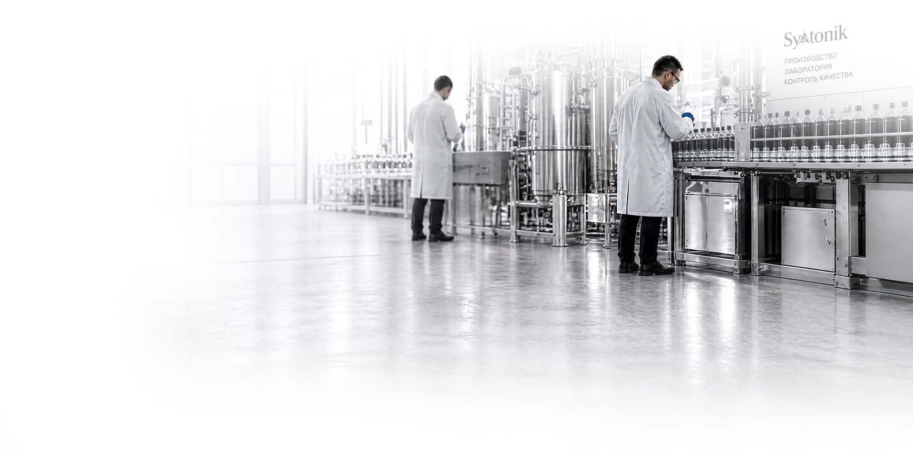

Региональный вариант · Волгоградская область
Syntonik в Волгограде: экономия до 35%
Добавка к топливу с доставкой в город: ТК по ЮФО 1–3 дня. Дозировка 1 мл на 10 л — около 2,2 ₽ на литр топлива.
Локальные условия
Почему здесь важна чистая система
Климат Волгоград
жаркое лето до +40 °C: перегрев топливной магистрали ускоряет лакообразование. Доза вносится до заправки — так состав сразу распределяется по топливу.
Дороги и пробки
вытянутый по Волге город, пробки 6 баллов. Именно в городском цикле экономия от добавки максимальна.
Популярные машины
седаны для длинных магистралей, автобусные парки, ГАЗель. Дозировка одинакова для всех — 1 мл на 10 л.
Цены
Прайс без региональных наценок
| Фасовка | Цена | Топлива в обработке |
|---|---|---|
| 100 мл | 12 600 ₽ | 1 000 л |
| 500 мл | 22 000 ₽ | 5 000 л |
| 1 л | 22 000 ₽ | 10 000 л |
| 5 л / 10 л | 110 000 / 220 000 ₽ | 50 000 / 100 000 л |
Доставка в Волгограде: ТК по ЮФО 1–3 дня. Оплата переводом на расчётный счёт ИП, чек предоставляем.
Вопросы
Частые вопросы
Сколько стоит Syntonik в Волгограде?
Цены общероссийские и не зависят от города: 100 мл — 12 600 ₽, 500 мл и 1 л — 22 000 ₽. Доставка: ТК по ЮФО 1–3 дня.
Какая дозировка и когда ждать эффект?
1 мл на 10 литров топлива, в бак до заправки. Первые измеримые изменения — со 2–4 бака, стабильный результат — к 5–7.
Кто продавец и как оформить заказ?
ИП Трухачев Андрей Витальевич, ИНН 590600754890, ОГРНИП 324665800218013. Контакты: +7 919 715-79-79, x.element@bk.ru, Telegram @ecosyntonik.
Материалы